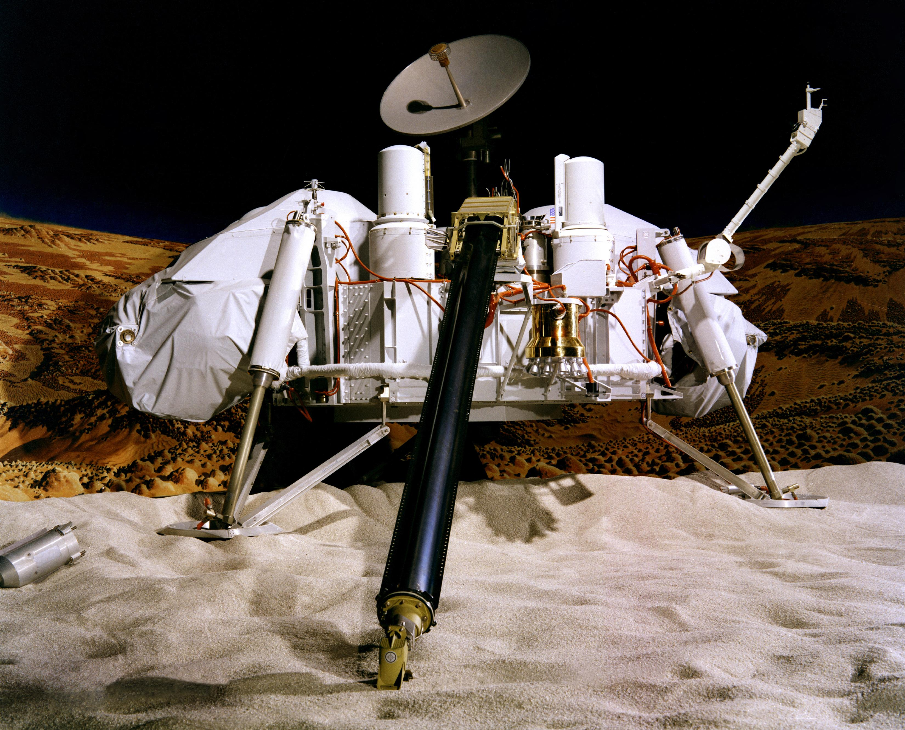

Viking Landers Information
The primary scientific objectives of the Viking Landers was to study/investigate the biology of Mars, the chemical composition (organic and inorganic) of the atmosphere and soils, the meteorology (or weather) for the planet, the seismology of the planet, magnetic properties of the planet and rocks found, and the appearance and physical properties of the Martian surface and atmosphere (dust storms, rock colors, ice, etc.).
FUN FACT: In order to perform the biology experiments and determine chemical compositions on the surface of Mars, not only did the Lander have to be fully sterilized (all Earth origin bacteria and chemicals removed), but the fuel used to land (Hydrazine) also had to be purified, to prevent contaminating Mars and the Lander. They even encapsulated the Lander in a "Bioshield" to prevent any last minute contamination (from Earth) for when it was launched on Earth.